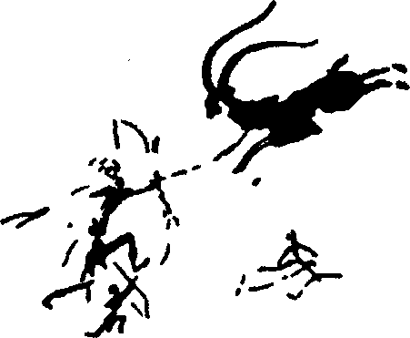
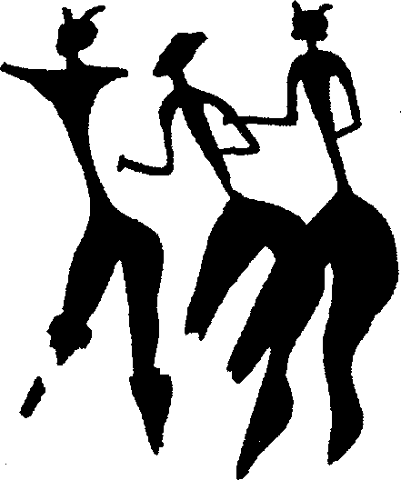
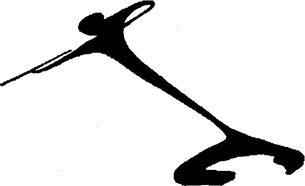
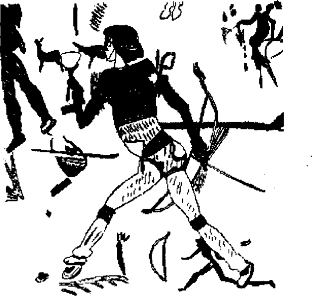

Herbert Wendt’in, bilimin insan ırkının ortaya çıktığı yeri arayışına verdiği adla “Adem’in aranması”474 artık Afrika’ya yönelmiştir ve son zamanlarda şaşırtıcı sonuçlar vermektedir. Irkımızın aile ağacını kurma alanında üç tür kuram görülmektedir. Sözü geçenlerin çoğu insanlığın tek evrim çizgisi halinde pirimatların son aşamasından geliştiğine inanmaktadırlar. Bu görüşü savunanlar ‘monophyletistler’ olarak bilinmektedirler: tek (mono) aileden(phyletikos: kabile) gelindiğini savunmaktadırlar. İkinci grup, ‘polyphyletistler’ ise -birçok (poly) aile (phyletikoi) bulunduğunu varsayanlar- ırkımızın bağımsız gelişen bir çok daldan oluştuğunu, bunların binlerce yıllık bir süreçle kaynaştığını savunmaktadırlar. Son olarak üçüncü bir grup ortaya çıkmıştır (1925lerden itibaren)475, bildiğim kadarıyla henüz Yunanca bir ad almamışlardır. Bunlar ‘insanlaşma bölgesi’ yani dünyada sınırlı fakat gene de yeteri büyüklükte ve nitelik olarak aynı bulunan bir alanda görece yakın bağları olan büyük bir bireyler nüfusunun (gelişmiş pirimatların bazı üçüncü türlerinin) insan biçimine dönüşmesi sonucunu veren genetik dönüşümlere aynı anda uğradıklarını varsaymaktadırlar.476 Çağdaş genetik bilimindeki kanıtlar ve Güney ve Doğu Afrika’da ilk insanımsıların şaşırtıcı sayıda çeşitlilik göstermesi, pigmeden (buzul çağı insanı-plesiantropos) dev gibi boyutlara (Paranthropus robustus) kadar ulaşabilmesi bu görüşü desteklemektedir. Yani ilk kuzenlerimiz olarak gördüklerimiz Afrika’nın gelişkin maymungilleri, goril ve şempanzedir, Güneydoğu Asya’nın insan çizgisine veya insanlaşma bölgesine daha uzak olan orangutan ve gibonları değil.477
Bu noktada şempanzenin davranışlarıyla ilgili iki eğlenceli rapordan söz etmeye değer. Dr. Wolfgang Köhler’in The Mentality of Apes kitabında yayımlanmışlar:
Köhler şempanzelerinin bazı nesnelere karşı kendilerine hiçbir yararı olmasa da açıklanamayan bir bağlılık gösterdiklerini ve kasıklarının üstüyle karınlarının alt bölgesi arasında doğal cep gibi yerlerinde onları günlerce taşıdıklarını farketmiş. Adı Tschengo olan yetişkin bir dişi, deniz tarafından parlatılmış yuvarlak bir taşa böyle bağlanmış. Köhler “Hiçbir bahaneyle taşı ondan alamazsınız” diyor, “akşamları onu odasına ve yatağına götürüyor.”478
Köhler’in ikinci gözlemi toplumsal nitelikli. Tschengo ve Grande adlı bir başka şempanze dervişler gibi dönme oyunu icat etmişler ve kalanlar da onları taklit etmiş. Dr. Köhler şöyle anlatıyor:
“İkisinin oynadığı her oyun bu ‘dönme’ oyununa dönmeye eğilimliydi ve arkadaşlık ve sevginin “joie de vivre”479 taşkınlığını ifade ediyor gibiydi. Dönüşler hızlandıkça veya Tschengo, örneğin, döndükçe kollarını ileri doğru uzattıkça, görünüş insanların dansına çok benzemeye başlıyordu. Tschengo ve Chica, 1916 boyunca en sevdikleri moda bu ‘dönüş’tü, bazan dönüşlere ileri doğru bir hareket de ekliyorlardı, böylece kendi eksenleri çevresinde ve oyun alanının boyunca yavaşça dönüyorlardı.
Bazen bütün şempanzeler grubu daha gelişkin hareket biçimlerine katılıyorlardı. Örnek olarak ikisi bir direğin yanında güreşip oynaştıklarında çok geçmeden hareketleri düzenli hale geliyor ve direğin merkez olduğu bir daire içinde yinelenmeye başlanıyordu. Teker teker grubun öteki üyeleri gelip o ikisine katılıyorlar ve sonuçta direk çevresinde düzenli bir yürüyüş gerçekleşiyordu. Hareketlerinin niteliği farkediyor, artık yürümüyorlar, tırıs gidiyorlar ve düzenli olarak bir ayaklarını bastırırken öteki adımlarını hafif atıyorlar ve kaba bir ritm oluşuyor, birbirlerine ‘uyum’ sağlamaya çalışıyorlar...
Köhler şu sonuca varıyor: “şempanzeler arasında ilkel kabilelerin dansına bu kadar benzer hareketlerin kendiliğinden oluşması bana çok olağanüstü geliyor”.480
Bu iki davranış, konumuzun tarihi için ilk toplumların ritüel etkinliklerini tasarlamamıza gerek bırakmayan biçimde ruhsal bir düzlem sağlıyor. ‘Kapılma’ adını verdiğimiz psikolojik bunalım görülüyor, hem ortak ritüeli hem de dans sanatını belirleyen grup hareketlerinin neşesi de ortada. Ayrıca, ortadaki direk gibi şaşırtıcı bir ayrıntı daha var; yüksek mitolojilerde bu direk dünyayı birleştiren ve ayakta tutan Kozmik Ağaç olarak, Dünya Dağı, axis mundi veya kutsal tapınak olarak anlaşılıyor ve toplumsal düzen ve bireysel tefekkür ona yöneliyor. Ve son olarak, onsuz hiçbir mitolojik veya ritüel ‘inandırma’ oyununun ortaya çıkamayacağı oyun duygusunu görüyoruz. Oyunda yeni enerji uyandıran ve grubu sakınma değil serbestçe hareket etme yolunda uyaran yani sanatı doğuran yön hemen farkedilecektir. Bu gözlem önemlidir çünkü dişi heykelciklerin ortaya çıktığı Aurignacian döneminden önce insan sanatına ilişkin hiçbir nesne bulunmamıştır.
Son dönemlerde bilim çevrelerini çok heyecanlandıran Afrika buluntuları kabaca (çok kabaca) buzul çağı ve Paleistosenin başlangıç dönemine yani 10 y. 600.000’e tarihlenmiştir. Beşinci Uluslararası Antropolojik ve Etnolojik Bilimler Kongresinde, 1956’da, Pennsylvania’da, Güney Afrika Johannesburg Witfatersrand Üniversitesinden Dr. Raymond Dart prelithik (taş çağı öncesi) kültürüne ait olduğunu ileri sürdüğü çok ikna edici buluntuların slaytlarını gösterdi. Bunlar ikiye kesilip bıçak ve testere olarak kullanılan büyük antilopların alt çene kemiklerini, çeşitli biçimlerde, muhtemelen kazı işlerinde kullanıldığı anlaşılan kafatasının bir bölümüyle birlikte gazal boynuzlarını, dişleri dökülmüş maymun-insan damaklarından birçok örneği içeriyordu. Bu yörede yerliler halen insan damaklarını kazıma aleti olarak kullanırlar. Fakat en etkileyici slaytlar özel bir biçimde kalın bir sopa darbesiyle kırılmış babun veya maymun-insan kafataslarını gösterenlerdi. Bütün kırıklar ucunda iki çıkıntı veya yumru bulunan bir aletin işi olduklarını gösteriyorlar. Profesör Dart ve arkadaşlarının bu çifte çentiğe neden olan aletin gazalın bacak kemiğinin ucundaki yumru olduğunu bulmaları zor olmadı. Fakat maymunlar silah kullanmazlar; ergo, suçlu insandı -veya en azından bir tür ilk insandı.
İÖ 600.000 yıllarına ait bu küçük adamların kemikleri yanında bulunan hayvan kalıntıları genellikle antiloplara, atlara, gazallara, sırtlanlara ve çayırların öteki hayvanlarına aittir, hepsi iyi koşucudur. Yani av sanatının oldukça gelişmiş olması gerekmektedir. Profesör Dart ayrıca, öldürülen hayvanların baş ve kuyruklarının kesildiğine dair bol kanıt bulmuştur. Kuyrukların kovalamacada işaretleşme için kullanıldığını önermektedir. Belkide! Peki başların kesilmesi niçindi? Hayvanlar yüzülüp başları ve kuyruklarıyla birlikte postları kan intikamını önlemek üzere büyüsel bir ritte mi kullanılıyorlardı? Kuyunun dibinden yankı mı duyuyoruz?
Ateşin kullanılışına ilişkin ilk kanıt bazılarının isteyebileceği gibi Güney Afrika’dan yeterince uzakta, şimdi ünlenen Choukoutien mağarasında, Peiping’den 37 mil kadar uzakta bulunmuştur. Burada, 1921’den 1939’a kadar yürütülen bir dizi kazıda çeşitli taş aletler, kırılmış kafatasları, yarılmış kemikler ve ateş yerleri ortaya çıkarılmıştır. Bir tür maymun-insanın eşyaları olduğu anlaşılmaktadır. Beyin kapasitesi 900 santimetre küp yani bugünün insanıyla (1400-1500 cm3) en büyük beyne sahip maymungilin (600 cm3) ortasındadır. Kafataslarının kırılma biçimleri birinin onlarda delik açtığını ve beyinlerini çıkardığını göstermektedir. Mağarada orda yaşayan veya yaşayanlar tarafından yenildiği anlaşılan binlerce hayvanın kalıntısı vardır. Kullanılan taş aletler satır gibi kaba veya bıçak gibi ince parçalardan oluşmuştur.
Bu soğuk, ateşle ısıtılan inin yamyam insanı, Sinanthropus Pekinensis, Pekin adamı (veya adlandırabileceğimiz gibi Büyük Prometheus), ünlü Cavalı Pithecanthropus erectus, dik yürüyen (erectus) maymun-insan (pithecanthropus), Cava adamı veya Üçlü Adamla çağdaştır. Cava adamının kalıntıları 1891’de bulunmuştur. Haeckel ve öteki on dokuzuncu yüzyıl evrim kâhinleri tarafından Darwin’in ‘kayıp halkası’nın ta kendisi olarak karşılanmıştır. Çin buluntusunun dikkat çeken tarafı ise mağaradaki ateştir. Çünkü bu döneme ait birçok insanımsı bulunmuş olmasına karşın, Choukoutien ateş kanıtı bulunan tek yerdir.
Dönemi geniş jeolojik tahminler içinde, orta buzul çağı Pelistosene (İÖ 500.000-200.000), ikinci buzul dönemle (Mindel) ikinci buzul arası döneme (Mindel-Riss) yerleştirebiliriz. İnsan türünün bu gelişim aşamasına ait ana buluntular, Pithekantropos ve Cava’daki benzerleri gibi, Ralph von Koenigswald’ın 1930’larda bulduğu ve Pithecanthropus robustus adını verdiği koca, kaba kafataslı ilk buluntuyla, aynı araştırıcı tarafından gene Cava’da bulunan ve şimdi Meganthropus palaeojavanicus adı verilmiş olan büyük alt çene kemiği olan iskelettir. Doğu Afrika’da bulunan ve Africanthropus adı verilen kafatası kalıntıları da bu dönem içinde sınıflandırılabilir. Ve elbette artık bütün okul çocuklarının bildiği ilk paleolitik dönem Avrupasında kalan klasik buluntular vardır; öncelikle koca çenesi 1907’de bir yığın içinde bulunan ve şimdi ilk buzul arası döneme (Günz-Mindel) tarihlenen Heidelberg adamı (Homo heidelbergensis); ayı, aslan, yabani kedi, kurt ve bizonun çayır ve ormanları insanla paylaştığı dönemdir. Yabani domuz, Mosbaç atı, geniş yüzlü geyik, Ftrüsk gergedanı ve uzun dişli arkaik fil de bunlar arasındadır. 1935’te Thames’de bulunan Swanscombe kafatası da belki bu dönemdendir ve ikinci buzul arası döneme tarihlenebilir. Fransa’da 1947’de bulunan Fontéchevade kafatası üçüncü buzul arası döneme (Riss-würm) ve 1933 te Almanya’da Steinheim mağarasında bulunan genç kadın kafatası gene aynı döneme ait olabilir. Bu son üçü fikir ayrılıklarına yol açmıştır, çünkü Doğu buluntularına göre çağdaş insan biçimine çok daha yakındırlar. Bir görüşe göre gelişmiş türe ait bu kafatasları, bulundukları şeklin düşündürttüğünden daha sonraki döneme aittirler. Öteki görüş iki ayrı evrim çizgisini savunmaktadır: biri Güneydoğu ve Uzakdoğu Asya’nm daha az elverişli Pleistosen ikliminde, öteki Kuzey Afrika ve Avrupa’nın daha yumuşak ikliminde gelişmiştir. Bu tartışma halen çözüme bağlanmamıştır.
Açık olan, insan ırkının, ikinci buzul arası dönemin (Mindel-Riss) ortasında, Afrika’dan kuzeye Avrupa’ya ve doğuya (Elbruz-Himalaya dağ hattının güneyinde kalmak üzere) Güneydoğu Asya’ya ve sonra kuzeye doğru uzakdoğu sahillerine kadar yayıldığıdır. Peder Wilhelm Schmidt, bu yayılmanın Amerika’ya kadar uzandığını savunmaktadır. İşaret ettiği gibi buzul çağlarında deniz seviyesi bugünkünden çok daha düşüktü ve Fransa büyüklüğünde bir köprü Sibirya’dan Alaska’ya uzanıyordu; at, sığır, fil ve deve sürüleri buradan geçmişti. Hayvanlar geçtiyse avcılar niçin geçemesin? Kutbun buzlu sularını durduran kara köprüsü güneyin sıcak akıntılarının engellenmeden bu sahillere gelmesini sağlıyordu dolayısıyla Kuzeydoğu Asya ve Kuzeybatı Amerika herhalde bugünkünden daha sıcaktı. Peder Schmidt bu konuda Jeolog Dr. W. Krickeberg’den alıntı yapar: “Bugün manzaraya umutsuz bir çöl görünümü veren çıplak topraklarda o zaman ormanlar ve step bitkileri fışkırıyordu; bunu buzul çağının ikinci yarısında buraya göç eden Asya hayvanlarından biliyoruz - ve bu hipoteze göre peşlerinden insanlar da geçmiştir- ancak çok azı kutup hayvanlarından oluşuyordu. Çoğunluğu kuzey ormanlarının ve steplerinin hayvanlarıydı ve bunlar arasında mamut da Kuzey Amerika’ya çağdaşı insanla birlikte geçmişti.”481
Amerika’da henüz üçüncü buzul arası dönemden öncesine ait paleolitik insan kanıtına rastlanmamıştır (Riss-Würm) fakat son yıllardaki keşifler tarihi sürekli geri atmaktadır. 1925 te Dr. Ales Hardlicka insanın Amerika’ya geliş tarihi olarak İÖ 1000 yılının olabileceğini ileri sürüyordu. Bugün Tierra del Fuego insanı için İÖ 6688 ± 450 yılı sözkonusu. 1926’da New Mexico’da soyu tükenmiş bizon türüne ait kalıntılarla birlikte bir filiz noktası (Folsom Noktası) bulunmuştur. Genel olarak İÖ 10.000 yılma tarihlenmektedir. Mamutla ilişkilendirilen iki daha eski nokta (Sandia ve Clovis Flutes) en azından İÖ 15.000’e gitmektedir.482 Şimdi tutucu tahminler bile İÖ 35.000’e uzanmaktadır ve hatta bazıları ‘gelecek bir kaç yılda bu kıtada insanın varlığının çok daha eskiye ‘Pleistosene gittiği görülecektir’’diye kehanette bulunmaktadırlar.483
Bütün bunlar elbette İÖ 400.000’e giden Pekin adamından çok yenidir ve aralığın kapanacağını söylemiyorum. Konumuz açısından ilginç olan, Peder Schmidt’in önerdiği gibi, Güneydoğu Asya ve Avustralya-Malenezya bölgesinde Yenidünya sahillerine geçen bir etki köprüsünün olabilmesidir. Konu üstüne çok dikkatle çalışan bazı bilimadamları, güneydoğu Asya’nın bazı halklarıyla Amerika’daki en ilkel gruplar arasında yalnız kültürel değil ırk bağlarının da çok eskiye gittiğine ait belirtiler bulmaktadırlar. Arjantinli antropolog José Imbelloni, örnek olarak, Tierra del Fuego Yahganları ve Alakaluflarında Tasmanyalı, Amazonun Matto kızılderililerinde Malenezyalı ve Kuzey ve Güney Amerika’nın göçebe avcılarında yarı-Avustralyalı izler bulmaktadır.484 Harold S. Gladwin Aşağı Kalifornia’dan Teksas Körfezine kadar, Ekvator ve Brezilya dahil Avustralya kafataslarına benzer kafatasları bulunduğunu yazmaktadır.485 Paul Rivet Antartika buzulları yoluyla Avustralya’dan Tierra del Fuego’ya göç olduğunu bile önermektedir.486 Burada önemli olan, Güneydoğu Asya-Tierra del Fuego paleolitik sürekliliğine ilişkin en küçük bir kanıt bulunsa, koşut evrim tezinin, en basit kültürel düzeyde bile geçerliliği kalmayacaktır.
Kanıtlara göre kalın kaşlarıyla hantal Prometheusumuz ekonomik materyalist olarak dünyanın en iyi örneğidir (beyin büyüklüğüne göre de böyle olması beklenir) çünkü üç yüz bin yıl süren varlığı boyunca bir sanat eserine ait en ufak iz ve belirti bırakmamıştır. Homo faber, alet yapıcısı olduğu par excellence ortadadır. İlk kaba çakıl taşı aletlerden ince baltalara doğru geliştirdiği yontma yeteneği elbette az iş değildir ve bütün kaba ve hatta yabani davranışlarına karşın değişmeyen bir mankafa olmadığını göstermektedir. İnsanın kültürel merkezi gene Afrika’dır. Burda inanılmaz çoklukta paleolitik alet bulunmuştur. Gerçekten bazı kazılar (örnek olarak L. S. B. Leakey’in Kuzey Tanganika’da Olduvai Gorge’de yaptıkları) baltanın, ilk kaba biçiminden mükemmelleştirilmiş, ince bir işçilik eseri olan Neanderthal dönemi baltasına kadar bütün evrelerini ortaya çıkarmıştır.487 Eğer Güney Fransa’da daldığımız kuyunun derinliğine müthiş diyorsak, Olduvai’ninkini ifade edibilmek olanaksızdır. Daha da şaşırtıcı olanı, dünya üzerinde Doğu Afrika paleolitik baltasının aynı biçimiyle gösterdiği geniş dağılımdır. Dr. Carleton S. Coon bu konuda şöyle der: “Çeyrek milyon yıl boyunca insanın yaptığı aletlerin biçimleri çok az değişmiştir fakat olan bütün değişiklikler her yerde görülür... Yarım milyon yıl önce yaşayan insanların, yeteneklerini, bugün yaşayan Avustralyalı ve Buşmenler gibi, en küçük ayrıntısına kadar gençlerine öğretebildikleri anlaşılmaktadır. Böyle bir öğretim konuşmayı ve disiplini gerektirir ve geniş bölgelerde balta biçimlerinin aynı olması, komşu grupların üyelerinin belli aralıklarla bu aletlerin kullanılmasını gerektiren etkinlikler için bir araya geldiklerini gösterir. Kısaca, dünyanın balta yapıcıları aynı ürünü üretmeye başladıklarında insan toplumu çoktan gerçeklik olmuştu.”488
Bütün bunlar ilkel dünyada yayılımın gücü ve çapı hakkında ciltlere bedel kanıtlardır. Belki de hala en fazla çarpıcı olan, bu dönemde yapılan en güzel ve simetrik baltaların pratik kullanım için hiç de elverişli olmayan bir boyda, altmış santim olmasıdır. Bunun tek açıklaması törenlerde kullanılmak için yapılmalarıdır. Profesör Coon bu baltaların kullanılan aletler değil kutsal nesneler olduğunu, daha sonraki dönemlerin tören aletleriyle karşılaştırılmaları gerektiğini önermiştir: “bunlar ancak mevsimlik olarak, ancak bir seferde yüzlerce insanın bir araya gelmesini sağlayacak kadar bol yiyecek bulunduğunda kullanılabilirler. O zaman yaşlılar toplanan insanlar için bu ağır ve muhteşem baltalarla et kesebilirler.” Sonra Avustralyalıların çurungaları gibi büyü gücü taşıyan bu kutsal aletler kutsal bir yere kaldırılabilir.489
Bengal Körfezinde, Burma kıyılarından 250 mil güneyde Andaman Adalarında yaşayan pigme zenciler vahşilikleriyle ün salmışlardı; Arap, Çin ve Hint kaptanları onlardan özellikle kaçınırlardı. Bu sahillerde kazaya uğrayan talihsizler öldürülür, derileri yüzülür, yok edilirdi. Haberlere göre yeniliyorlardı. Ve adaların zenginliği ele geçirmeye değmeyecek düzeyde olduğundan -bir kaç domuz türü, misk kedisi, bir kaç tür fare ve yarasa, ağaç kemesi, suda yüzebilen, karada yürüyebilen ve ağaca tırmanabilen mitolojik ‘üç dünya efendisi’nin mükemmel bir karışık yaratık örneği olan fakat başka hiçbir işe yaramayan bir tür küçük kertenkele- adalılar İS on ikinci yüzyıla kadar İÖ ikinci yüzyıldaki kültürel düzeylerini sürdürdüler.
Kırk elli erkek, kadın ve çocuğun yaşadığı sekiz veya on açık cephesi olan saman tavanlı barınak elips biçiminde temizlenmiş dans alanını çeviriyor; geceleri ayakla çalınan içi boş ağaç kabuğu çalınır, gündüzleri kadınlar şarkı söyleyip bacaklarına vurarak tempo tutarken, küçük erkekleri de çevrede dans edip dönerler.
Bu toplum hakkındaki monografisi çağdaş antropoloji araştırmalarının klasik örneği olan Dr. Radcliffe-Brown “güneyli kabilelerde dans sırayla sağ ayak veya sol ayak üstünde yapılır. Sağ ayakla dans edilirken ilk hareket sağ ayak üstünde hafifçe sıçramak sonra sol ayağı kaldırıp yere sürterek geri çekerken tekrar sağ ayak üstünde sıçramaktır” diye anlatıyor. “Şarkının iki vuruşluk zamanında yapılan bu ilk üç hareket sağ ayak yorulana kadar tekrarlanır. Sonra dansçı hareketi sol ayak üstünde sıçramak üzere değiştirir, sağ ayakla yere sürtülür ve sol üstünde tekrar sıçranır.”490 Eğer okuyucu Köhler’in maymunlarının dans adımlarıyla Radcliffe-Brown’un Andamanlılarınkini karşılaştırırsa, sanırım, bu düzenin insan türünün ‘joie de vivre coşkusu’nu ilk ve zorlu 400.000 yıldan beri ifade ettiğini onaylayacaktır.
Andamanlar arasında örgütlenmiş hiçbir yönetim biçimi yoktur. Topluluk işleri yaşlı erkek ve kadınlar tarafından yürütülür. Fakat her yerel grupta güleryüzlülüğü, av yeteneği, iyilikseverliği ve yardımcılığıyla arkadaşlarınca önderlik ve öğütleri kabul gören daha genç biri vardır. Son olarak doğaüstü güçler kazandıkları için etki sahibi olan erkek ve kadınlar bulunur. Radcliffe-Brown’a göre bu güçlerini ruhlarla konuşarak, ölüp tekrar dirilme veya ormanda buluşma veya düş yoluyla onlarla ilişki kurarak kazanmışlardır. Dolayısıyla mitoslar doğaüstü güçlerle donatılmış bu erkek ve kadınların özel sorumluluğu altındadır.
Gene, yaşayan müze Andaman Adalarında, en azından yaklaşık olarak, insan yaşamının birincil düzeyine ait koşulların varlığını görüyoruz: yaşlıların zekâsının gücü; toplumsal uyum içindeki bireylerin terbiye, incelik ve ustalığı; ‘sevecen zihinli’lerin içsel deneyim zenginliği. Bunlara böyle bir toplumda nüfusun önemli bir bölümünü oluşturan yedi yaşındakilerin altındakilerde temsil edilen kaçınılmaz ‘çocukça algılanan dünya’yı da eklersek, dünyanın her yerinde oluşan mitolojik kaleydoskop öbeklerinin kurucu gücü olan temel şemayı yakalamış oluruz. Elbette koşullara bağlı olarak vurgular değişebilir, etki ve gücün büyüklüğü değişebilir fakat her yerde bu dört kaçınılmaz, yaratıcı güç merkezi aynı kalır. Dahası, Andamanlılar arasında erkek ve kadın açısından belirgin bir farklılaşma olmadığından iki tarafın da katkısı serbestçe ortak yaşama katılır ve doğanın siklonlar, ani ölümler, hastalıklar ve öteki ‘Tanrı işleri’ gibi kötülükleri dışında kendi mitoloji ve folklorlarında olumsuz, bedel ödetici ve kötücül bir yön yoktur.
Bu küçük insanların mitolojisinde temel kişilik kuzeybatı musonu Biliku’dur, bazen örümcek biçiminde canlandırılır ve muson gibi aldatıcı, değişken bir yapısı vardır, hem yararlı hem tehlikeli olabilir. Biliku’nun çoğunlukla dişi olduğu söylenir, burada bebekliğin ‘anne etkisi’ni tanımak zor değildir, das Ewig-Weiblich düşüncesi de görülür. Çağdaş psikoloji araştırmalarından bildiğimize göre böyle bir yansıtma tamamiyle doğal -gerçekten kaçınılmaz- niteliktedir, Andamanlıların da bu temel psikolojik yasanın dışında kalacakları düşünülemez. Güneybatı musonu, Tarai, Biliku’dan yumuşaktır ve onun kocası olarak canlandırılır, çocukları da güneş, ay ve kuşlardır. Güneş ayrıca ayın karısıdır ve onların çocukları da yıldızlardır. Ay bazan domuza dönüşebilir.
Mitoloji sistemleştirilmemiştir, tek olayla ilgili bir kaç anlatım bulunabilir. Örnek olarak Biliku, erkek veya dişi olarak, dünyayı yaratmış, sonra insanı yaratarak Tomo adını vermiştir. İlk insan Tomo Andamanlılar gibi karadır fakat daha uzundur ve sakalı vardır. Sonra Tomo’nun karısı olmuştur, Yengeç Hanım. Bir anlatıma göre Biliku Yengeç Hanım’ı Tomo’ya nasıl yaşanacağını öğrettikten sonra yaratmıştır. Bir başka anlatımda Tomo onu evinin yanında yüzerken görmüş, çağırmış, o da gelip onun karısı olmuştur. Gene bir başka anlatıma göre zaten hamile olan Yengeç Hanım kıyıya çıkmış ve şimdiki insan ırkının ataları olan çocuklarını doğurmuştur. Bir başka dizi Tomo’nun karısı olarak Kumru Hanımı, bir başkası Ay’ı söyler, o da aynı zamanda güneşin kocasıdır. Bazan Tomo’nun kendisi güneştir. Fakat okuyucu Andaman mitosunda Yalıçapkını’nın ateşi çaldığını491, Biliku’nun ateş getirici Yalıçapkınının kanatlarını yok ettiğini, böylece onun ilk insan olduğunu anımsayacaktır.
Kertenkele Efendi de ilk insandır; karısı Misk Kedisi’dir. Evliliğinden önce, erginlenme törenlerini tamamladıktan hemen sonra, domuz avına çıkan Kertenkele Dipterocarpus ağacına tırmanmış, nasıl olduysa cinsel organından sıkışıp orda kalmıştır. Kedi Hanım onu görmüş, kurtarmış, sonra ikisi evlenmişler ve Andamanlıların ataları olan çocukları doğmuştur.492
Yakındoğu’nun arkaik yüksek uygarlığında, Kudüs Tapınağında kadınların kendisi için ağladığı (Hezekiel 8:14), Mısırlı eşdeğeri Osiris olan Tanrı Tammuz-Adonis yabani domuz avlarken karnından yaralanmış, güçsüz düşmüş, ölerek yeraltı dünyasına inmiş, tanrıça Iştar-Afrodit -hayvanı misk kedisi değilse de aslandır- yeraltı dünyasına inerek onu kurtarmıştı. Bu koşutluğu nasıl açıklayabiliriz? Yanıt tarih öncesi örenlerinde bulunabilir. 1952’de Lidio Cipriani bir dizi Andaman örenini kazdı; bunlar beş, altı bin yıllık bir birikimin sonucu olmalıdır. Şunları buldu: 1) 180 santim derinliğinde Avrupa’dan ithal edilen eşyalar, kırık cam parçaları, tüfek kurşunları, demir parçaları, vb.; 2) daha derinde pipo olarak kullanılan yengeç bacakları, domuz kemikleri, çömlek parçaları ve iyi korunmuş istiridye kabukları; 3) tabandan doksan santim yukarıda ise hiçbir yengeç bacağından pipo, domuz kemiği, çömlek veya kabuk sağlam değildir, toz halinde kireçlenmiş olmaları, ateşte yakıldıklarını göstermektedir. Sonuç olarak Cipriani “Andamanlılar, geldiklerinde, çömlekçiliği bilmiyorlardı. Bundan önce yemeklerini doğrudan ateşte veya külde pişiriyorlardı, sonra kaplarda pişirmeye başladılar...” diyor, “ilk Andaman çömlekleri iyi yapılmıştır, çamuru iyi işlenmiş ve ateşte iyi pişirilmiştir. Üst tabakalara doğru yaklaştıkça yapıları daha çok bozulur... Sus andamanensis (Andaman domuzu) kemikleri çömleklerden sonra ortaya çıkar. Üst tabakalara vardıkça sayıları artar. Çıkartılması gereken sonuç, eski Andamanlıların çömlekçilik ve domuzu bilmedikleridir. Çömlekçilik ve evcil domuzun aynı halk tarafından getirilmiş olduğu düşünülebilir”.493 Böylece, burda da, bir kez daha yayılma ve gerilemeyi görüyoruz. Neolitiğin büyük mitosu Venüs ve Adonis, İştar ve Tammuz’la birlikte gerileyen neolitik ve land-nânia ilkesiyle494 Tanrıların Kedi Hanım ve Kertenkele Efendi’ye dönüşümü.
Andaman masallarında baskın çıkan hayvanların toplumsal bir değerleri yoktur. Ormanda yaşayan küçük komşulardır ve mitolojik çağda, Biliku yeryüzünde yaşarken ataların arkadaşlarıydılar. Fakat ateşin bulunuşuyla insandan kopmuşlardır. Hayvanların gece korunmak için ateş yakan insanlardan korkarak uzaklaştıkları da doğrudur. Üstlerindeki bazı işaretler de bu ilk ateşin acılı izlerini taşırlar.
Hoş küçük hayvan masalları dünyanın her tarafındaki bütün avcı ve toplayıcı halklar tarafından çınlatılır, hatta çocuklarca kendiliğinden uydurulur. Dolayısıyla bunun çok eski bir kategori olduğunu kabul etmekte sakınca görmüyorum. Oysa öykülerin düğümünde tanıdık hayvan ve kuşların çeşitli türleri başrolü oynar ve bunlar oldukça değişkendir. Yani Kertenkele’nin Misk Kedisi tarafından kurtarılması örneğinde hayvan masalı türünün paleolitik nitelikte olmasına karşın, düğümde ortaya çıkan kültürel etkilerin, yerel ortamın doğurması beklenmeyen çok daha yüksek uygarlık merkezlerinin sonucu olduğunu düşünmeliyiz.
Andamanlılar için yiyecek olarak kullanılan birçok hayvan aslında insandır. Bir kano devrilir ve içindekiler kaplumbağa olur; Misk Kedisi bazı ataları domuza çevirmiştir; bazı domuzlar denize atlamış ve dugon olmuştur. Öldürülen ve yenilen hayvanlarm adalılar üstünde ormandaki komşularından farklı bir psikolojik etki yaptığı görülmektedir. Róheim’in daha önce alıntılanan “öldürülen herşey baba olur” gözlemi akla geliyor. Andaman ritleri çoğunlukla çocuğun bu yiyecek-hayvanların güçlerinden korunması amacını taşır. Genç, erkek veya kız, bir süre bu hayvanı yemekten kaçınmalı sonra törensel korunma altında ilk yemeğini yemelidir. Kızın erginlenme riti ilk adet görmesiyle, gene koruma altında bir kulübede üç gün oturmasıyla başlar. Korunma gerektiren öteki bunalımlı zamanlar doğal olarak doğum, evlilik ve ölümdür. Bütün bu tür olaylarda söz konusu kişiler çeşitli tören süslemeleriyle anın tehlikelerinden korunurlar. Kırmızı boya, beyaz çamur, bıçakla açılmış (çizilmiş) desenler, süsleyici bitki lifleri, vb. ayrıca törensel dans, ağıtlar ve mitosların söylenmesi.
Mitos ve ritlerin güç ve işlevine ilişkin görüşümüz burda ortaya çıkıyor. Psikolojik tehlike anlarında bir yerin ve grubun tehlikeleri karşılaması ve atlatması için yaşam enerjilerini büyüsel biçimde harekete geçirirler. Bu tehlikeler çeşitli kaçınılmaz evrelerde karşılaşılan türden olabildikleri gibi, az insan tarafından tesadüfen yaşanılan olaylar da olabilirler. Bir başkasını öldüren kişi törensel olarak süslenip korunmalıdır. Ormanda, düşünde veya ölümde hayaletlere rastlayan bir insanın mitosla korunması gerekir. Profesör Radcliffe-Brown’a göre Andamanlılar için en büyük tehlike kaynağı ruhlardır: ölülerin hayaletleri ve doğaya can veren gizli güçler. Bireyin temel korunma yolu da grubun adetleri, törenleri, ritleridir.495 “Andamanlılar için mitos ve efsanelerin işlevi” diye yazmaktadır, “ritüel ve törenlerle tamamiyle koşuttur”496; “bireyin toplumun kendisine verdiği moral gücü hissetmesinin araçları bunlardır”.497 Toplumun moral gücünü ifade eden bütün bu adetlerin, törenlerin, mitos ve ritlerin kökeni nedir? Burda uzmanların görüşleri farklılaşmaktadır. Kendi zihin çalışmalarımı son bölüme saklıyorum.
Andamanlıların durumu paleolitik yayılımın tropik ve yarı tropik bölgelerde, yarı göçebe toplayıcı, küçük av hayvanları avlayan toplumların yapılarına ilişkin norm olarak ele alınabilir. Fakat kuzeyli, Elbruz-Himalaya dağ hattının acı soğuk kuşağından, yaklaşık İÖ 200.000’lerde yapılı Neanderthal ırkın gelişiyle durum değişmiştir. Ateşin bulunması ve hayvan postlarının giyilmesiyle kabilenin erkekleri kuzeyin sert topraklarına girme cesareti bulmuş olmalılar. Böylece bol et bulma olanağına kavuşuyorlardı. Ayrıca beyin gücü de önemli oranda artmıştır. Pithekantropos döneminde 900-1200 santimetre küp arasında değişirken Neanderthalin beyni 1250-1725 cm3’e ulaşmaktadır, bugünün insanından, üst sınırda, daha büyük beyne sahiptir; daha önce söylediğimiz gibi günümüzün ortalaması 1400-1500 cm3’dür. Artık sahnede dağınık aileler halinde moronik maymun-insanlar değil, olağanüstü güçlü insan ırkı vardır; belki de, insanlık tarihinin gerçek şafağı kabul edilmesi gereken dönemde sergileyebileceği bütün cesaret ve aklı kullanan, zihni gücü bizden biraz daha fazla bir insandır bu.
Neanderthal insanın av yöntemlerinin ne olduğunu bilmiyoruz. Kullandıkları silahların ve avladıkları hayvanların boyları büyük değişiklik gösteriyor. Ok ve yay henüz icat edilmemişti, fakat bumerang veya fırlatma sopası bulunmuştu. Kovalama ahşap, sivri uçlu sopalar, taş fırlatmalar bumeranglarla yapılıyordu ve avlanan hayvanlar mamut, gergedan, yabani at, bizon, yabani kedi, ren geyiği ve geyik, boz ayı ve mağara ayışıydı. Hayvanlar yaya olarak kovalanıyordu ve bazan yüz yüze geliniyordu. Bu koşullarda erkeğin cesaret ve dayanıklılığının ona önemli bir üstünlük sağlamasının nedenini kavramak zor değil.
Kadının büyü gücünün de tanındığı ve uygulandığını düşünmemiz gerekir. Frobenius’un bildirdiği pigme ritinde kadının kollarını güneşe doğru kaldırıp bağırması önemli bir yer tutuyordu. Bu gün de kutup avcıları arasında kadın şamanların oldukça çok olduğunu ve saygı gördüklerini biliyoruz. Çünkü, Ruth Underhill’in işaret ettiği gibi, doğurma ve âdet görme gizemleri gücün doğal ifadeleridir. Hem kadının kendisini hem de ait olduğu grubu koruyan yalıtma ritleri gizemli bir tehlike düşüncesinden kaynaklanır oysa çocuk yaşta ve yetişkin erkeklerin ritleri daha çok toplumsal bir nitelik taşır. Erkeklerinki ilahiyat sistemlerinde ussallaştırılır. Doğum ve adet görmenin taşıdığı doğal gizem doğrudan ölüm kadar ikna edicidir ve bugüne kadar, başlangıçta olduğu gibi, dinsel huşunun ana kaynağı olmuşlardır.498
Amerika’ya ilk göçlerin eğer bugün verilen ilk tarihler, İÖ 35.000 doğruysa, Neanderthal insanın son dönemlerinde olmalıdır. Neanderthal insanın güneydeki çağdaşları Cavalı Yalnız İnsan (Homo soloensis) ve Güney Afrikalı Rodezyalı insan (Homo rhodesiensis)’dir. İlki Ngandong insanı olarak da bilinir ve Cava insanı, Pithecanthropus erectusla, Avustralya’nm çağdaş yerlileri arasında bir adım olduğu önerilmiştir.499 Rodezyalı insan (Homo rhodesiensis) ise, öte yandan, Zenci Afrika’nın hiçbir çağdaş ırkıyla ilişkilendirilememiştir. Bunlar, Moğol ve Kafkas ırkları gibi, insan evriminin çok daha sonraki bir aşamasına aittirler.500
İnsanın dinsel düşüncesinin ilk biçimlerine ilişkin yanılmaz arkeolojik kanıtları Homo neanderthalensisin mezarlarında ve ayı tapınaklarında gözden geçirdik. Krapina ve Ehringsdorf’da bulunan Neanderthal kafataslarını gözlemleyerek ritüel yamyamlığa ilişkin yeni kanıtlar ekleyebiliriz. Bunlar garip bir biçimde kesilmişlerdi. Neanderthalin Cavalı çağdaşı Yalnız insanın (Ngangdong insan) bulunan bütün kafatasları da aynı biçimde kesilmiştir. Son olarak, çağdaş Bornea kafatası avcıları beyinleri yemek için kafataslarını kestiklerinde -kafatasları kendi içindekiler için kap görevi görür- tamamiyle aynı biçimde kestikleri anlaşılmıştır.501
Geçmeden önce, kültürel biçimlerin, ırkların ilk ortaya çıkışlarından ne kadar sonraya aynen korunabildiklerinin etkileyiciliğini vurgulamalıyım!
İlk kafatası avcılığının hangi ritlerle ilişkilendirildiğini bilmiyoruz. Fakat ayı kafasının kurban edilmesiyle aynı anlayışı taşıması olasıdır. Özellikle Romanın seksen mil kadar güneydoğusunda San Felice Circeo yakınlarındaki beş odalı Guattari mağarasında bulunan Neanderthal kafatasının da kurban edilen ayıya çok benzerlik göstermesi bu görüşü güçlendirmektedir. Kafa kesilmiş, beynin çıkartılması için delik açılmıştır; kurban edilen hayvanların kalıntıları mağarada kaplar içinde saklanmıştır, kafatası ise mağaranın tabanına yerleştirilmiştir, çevresi taşlarla sarılıdır.
Duayı duyar gibi oluyoruz: “Ey yüce ilah! Ulu ilah sana tapıyoruz. Seni annenin ve babanın yanına göndermek üzereyiz. Onların yanına vardığında lütfen bizden iyi söz et ve sana nasıl iyi davrandığımızı anlat. Lütfen gene bize gel, seni gene saygıyla kurban ederiz.”
Daha garip olanı, Circeo Dağının tepesinde Kirke’ye adanan Roma tapınağının kalıntılarının bulunmasıdır. Kirke Odysseia’nın yoldaşlarını domuza çevirdiği gibi kahramanın kendisini de Ölüler Ülkesinin mağaralarla dolu girişine ulaştırmıştır. Burnun adı da bu inançtan gelmektedir; bu kara parçasının, nerdeyse tamamiyle denizle çevrelenmiş yüksek ve güzel yerin adı halk arasmda Kirke Adaşıdır.
Aurignacian dönemin tarihlenmesi yeni Karbon-14 tahminlerinin kabul edilip edilmemesine göre büyük farklılıklar gösterir. Abbé Breuil ‘saçma sonuçlar’ verdiği ve ‘büyük yetersizlikler gösteren’ zaman aralıkları doğurduğu için bu tahminleri reddeder. “Bu yöntemin sınırlarını öğrenene kadar bekleyemeyiz” diye yazar, “malzeme on beş, yirmi bin yıldan eski olduğunda kesinliğinin çok daha azaldığı görülüyor”.502 Herbert Kühn İÖ y. 60.000’leri503, Abbé Breuil 40.000, Carleton S. Coon öte yandan, yeni kanıtları kullanarak İÖ y. 20.000’leri önerir.504 Würm buzulunun İÖ 35.000’lerde zirvesinde olduğu düşünülerek, bu zirvenin peşinden geldiği açık olan Aurignacian dönem yaklaşık İÖ 30.000’lere tarihlenebilir.
Bu dönemin tipik kişiliği -Weinert’in ifadesiyle imza’sı- Crô-Magnon insandır. Dik, uzun boyludur, beyin kapasitesi 1590’dan 1880 cm3’e kadar çıkmaktadır (çağımızdan biraz daha büyük).505 Başka insan ırkları da görülür. Bunlardan bazıları çağdaş Eskimo’ya benzediği söylenen Chancelade İnsanı, Combe Capelle İnsanı ve İtalyan tipini andıran Grimaldi’dir. Crô-Magnon kalıntıların Ümit Burnuna kadar bütün sahil boyunca bulunduğu Afrika kıtasındaki öteki türler Buşmanları andırmaktadır.506
Büyük Av çağına son veren, son paleolitik dönemin dört ana devresi belirlenmiştir: Aurignacian, Solutrean, Magdalenian ve Capsian devreler.
Bu dönem paleolitik kadın heykelciklerinin ve en eski kaya gravürlerinin ve resimlerin geliştiği dönemdir. Duvar sanatı çizgisel ve biraz kabadır, ama basit ve yetersiz olduğu söylenemez; arkaik gerilimi çağrıştırmaktadır. Öte yandan, kemik, diş ve taştan yapılan heykellerse, cesurca stilize edilmişlerdir, bazıları gerçekten çok zarif ve dikkat çekici derecede ‘modern’dir.
Birçok mağaranın duvarında mağara ayısının pençe izleri bulunmuştur ve gravür ve resimlerin çoğunlukla bu izlerin üstünde bulunduğu gözlemlenmiştir. Böylece bu hayvan sanatının ilk öğretmeninin Ayı Efendi olduğunu ve dokunduğu yerlerin hayvan büyüsü için uygun yerler oluşturduğunu söyleyebiliriz. Duvarlarda aynı biçimde insan eli çizimleri ve resimleri de görülmektedir, ellerin çoğunda parmaklar eksiklidir. Parmak boğumu kurbanı Kuzey Amerika ova kızılderililerinkini çağrıştırmaktadır. El izleri belki de duvarlara ayı izleri taklit edilerek yapılmıştır.
Mağaralar hayvan büyüsünün ve insan ritlerinin alanıdır. Mağaralar yeraltı dünyasının kendisiydi, yeraltı sürülerinin ülkesi; yukardaki dünyanın sürüleri burdan yukarıya çıkıyorlardı. Mağaralar gecenin özü ve ülkesidir, yıldızların, gece göğünün ülkesi, yıldızlarla eş tutulan hayvanlarm gün açmadan kesilmesi gerekiyordu. Hayvan Efendi ve şamanizm, törensel gömülmeyle öteki dünyaya yolculuk, erkeklerin geçiş ritleri, yeniden doğum ve maskeli dans bu parlak çağın esinlediği tapınmalardır.
Kadın heykelcikleri, ayrıca, tanrıça mitolojisinin varlığını gösterirler. Erkeklerin dans ritlerindeki parmak kesmeye eklemlenen veya ona yabancı bir sistem olabilir; tanrıça daha çok mağaralarla ilişkilendirilen bir bağlam düşündürtmektedir. Tropikal bölgelerin bitki yetiştirici mitolojisi -en azından bu mitolojinin ilk biçimleri- artık biçimlenmiş olmalı ve ilk yayılımını gerçekleştirmiş bulunmalıdır.
Mağara sanatının klasik alanı Güneybatı Fransa ve Kuzey İspanya’dır. Kadın heykelcikler ise Pirenelerden Baykal Gölüne kadar uzanır. Ayrıca, av peşinden Amerika’ya göç -kabaca Baykal bölgesinden- bu dönemin sonundan önce başlamış olmalıdır.
Solutrean dönemi soğuk, kuru bir dönemdir. Koruyucu mağara ve kaya sığınaklar artık tundraların yerini alan çayırlara çıkan insanlarca terk edilmiştir. Sahneyi geniş bir bölgeyi dolaşan etobur sürüler ve göçebe avcı çeteler doldurmuştur. Dordogne’den Mississippi’ye kadar mamut avı doruğuna çıkmıştır.
Batı Avrupa’da artık Tanrıçanın güzel imgelerini göremiyoruz fakat doğu Avrupa’dan Baykal bölgesine kadar uzanan geniş lös topraklarındaki av sahalarında hala önde gelen kişilik odur. Ayrıca, Moravya’da Predmost, Ukrayna’da Mezin ve Sibirya’da Mal’ta heykelcikleri -bazı uzmanlar bu döneme, bazıları Aurignacian dönemine ait olduklarını kabul ederler- birbirleriyle büyük benzerlik gösterirler.507 Ortak av sahası, artık çok genişlemiştir ve kolaylıkla seyahat edilebilen bir yerdir.
Doğudan, Macaristan ve Tuna bölgesinden gelen yeni bir insan ırkının, Dordogne’ye kadar uzandığı iskelet kalıntılarından anlaşılmaktadır; Brünn, Brüx ve Predmost’ta en iyi örnekleri bulunmuştur. Yeni ırkın özel yetenek gösterdiği alan güzel mızrak uçları yapımıdır. Kafatasları ise, zihinsel niveauda düşme olduğunu göstermektedir, 1350 cm’lük kapasiteye kadar inilmiştır. Mamut dişinden hayvan heykelcikleri, tanrıçalar ve süslemeci geometrik desenlerin temizliği bu ırka ait birçok yerin belirleyici özelliğidir. Brünn iskeletlerinden biri salyangoz kabukları, delikli taşlar, gergedan ve mamut kaburgalarından süsler ve mamut dişleriyle zengin biçimde süslenmiştir. (Kötü biçimde zedelenmiş, erkek olduğu anlaşılan dişten yapılma bir heykelcik de kırmızı boyalı birçok nesneyle birlikte bu mağarada bulunmuştur.)508 Bu ırkın yetenekli avcılar olduğu ve tanrıça kültünü Solutrean zamanlarına kadar taşıdığı anlaşılmaktadır.
Bu dönemin karakteristik yerleşim yerinde, Orta Fransa’da Saóne yakınındaki Solutré’de büyük bir kamp ateşi yeri bulunmuştur. Kuzeyden dik bir yamaçla korunan kamp, güneyde güneşe açıktır ve büyük ateş yerleri ve bol şölen kalıntılarıyla doludur. Yabani kedi ve at, yünlü mamut, rengeyiği ve geyik, mağara ayısı ve boz ayı, porsuk, tavşan, kurt, sırtlan ve tilki kalıntıları boldur. Çakal da görünmeye başlamıştır ve biçim ve karakter olarak Amerika koyotunun eşdeğeridir.
Bütün bu yabanıllar gece ateş çevresinde anlatılan masallara konu olmuş olmalıdır, belki de bazıları yalnız avcı kabilelerin folklorunda değil çocuk öyküleri ve düşlerinde oynadıkları rolleri o günden oynamaya başlamışlardır.
Bir başka soğuk fakat nemli bir dönem geldi ve Avrupa’da çayırlar çam ormanlarına dönüşmeye başladı. Toynaklı hayvan sürüleri Kuzey Asya’ya doğru yöneldi, avcıların çoğu da peşlerinden gitti. Güney Fransa ve Kuzey İspanya tapınak mağaralarının Magdalenian dönemiyle Aurignacian dönemini birleştiren bir süreklilik gösterdiği, Solutrean döneminin gene de ara dönem gibi kaldığı anlaşılmaktadır.
Duvar sanatının hayvan biçimleri şimdi çok güçlü, akıcı çizgiler ve zengin renklerle ustalık kazanmıştır; hayvanlara o zamana kadar görülmeyen bir gözle bakılmakta ve mükemmel eğitim görmüş eller çalışmaktadır. Bu sanat büyüydü. Ve resmedilen sürüleri sonsuzluğun sürüleriydi, zamanın değil, hatta zamanın hayvanlarından daha canlı ve gerçektiler çünkü onların ölümsüz kaynakları bunlardı. Altamira’da büyük boğalar -nerdeyse nefes alıyorlardır, çok canlıdırlar- tavandadırlar, bize doğalarını, yıldız olduklarını anımsatıyorlar. Ve Frobenius’un Kongo pigmelerinin mitolojisini anımsıyoruz: yükselen güneşin ışınları gökyüzünün sürüsünü öldürüyor.509 Avcı güneşle, mızrağı onun ışınlarıyla ve çayırların sürüleri gökyüzünün sürüleriyle özdeşleştirilmektedir. Avın kendisi göksel bir maceradır, sonsuz formları zamana getirir. Ve mağara ritüeli, demek ki, başka nesneye dönüştüren ayindir.
İşte gökyüzünün sürüleri burda, gece semasının birincil uçurumundadırlar. Çünkü bu tür düşün mantığına göre ve mitos oyununda A, B’dir ve B de C’dir, bu mağara zamansız gece uçurumudur ve resimler de dünyanın geçici sürülerin gerçek formları, Platoncu idealarıdırlar; bu geçici sürüler insanla birlikte hayvan efendi, gönüllü ölüm ve kutsal av oyununu oynayacaklardır.
Magdalenian dönemi Tuc d’Audoubert tapınağının erkek ve dişi bizonu, Trois Freres’in danseden şamanı, Lascaux’un şaman transı ve bizon kurbanı, Montespan’ın ayı kurbanı dönemidir. Büyük Av mitolojisinin tam zamanıdır.
Yayılan ormanların yeni hayvan türleri kalıntılar arasında bulunmaya başlanmıştır -kızıl geyik, orman atı, mus ve fallow geyiği- artık çayırların muhteşem günleri geçmektedir. Avcılar ırmaklar ve denizlere yönelmektedir; kemikten zıpkınlarla balina ve ayı balığı avlanmaktadır. Garip biçimde Crô-Magnon avcıların boyu da küçülmüştür; artık 1.80, 1.90 değil, 1.55, 1.60 civarındadır. Beyin kapasitesi de günümüzdeki 1500 cm3’lük hacme düşmüştür.510
Mezarlarda bulunan bazı ilginç motifler üstünde durmak gerekir. Ain’de, Les Hôteaux mağarasında: Magdalenian araç gereçle yüklü, kırmızı aşıboyalı, sırtüstü yatan ve uyluk kemikleri çevrilmiş bir iskelet, Charente, Placard mağarasında: gömülmek için gövdelerinden ayrılmış yedi kafatası; çoğu delinmiş salyongoz kabuklarıyla çevrelenmiş bir kadın kafatası; kap yapılmış tepeleri kesik iki kafatası. Landes, Sorde’de, Kuruthy mağarasında: gerdanlığı ve aslan, ayı dişlerinden kemeri olan bir iskelet. Chancelade’de: bacakları kısa, boyu 1.40’dan fazla olmayan, Magdalanean aletleriyle örtülmüş, kolları bağlanmış olması gereken bir durumda duran, daha önce sözü edilen Eskimo benzeri iskelet. Ve son olarak, Bonn yakınlarında Oberkassel’de: bir kilometre kadar mesafede biri yirmi yaşlarında kadın, öteki kırk, elli yaşlarmda iki iskelet. Sırayla boyları 1.55 ve 1.60; büyük bazalt parçalarıyla örtülmüşlerdi ve kırmızı boya maddesi iskeletlerden çevredeki taşlara bulaşmıştı. Hayvan kalıntıları da vardı; küçük kemikten oyulmuş bir at başı ve küçük bir hayvan başını, ağaçsansarını andıran ustaca oyulmuş ve cilalanmış kemikten bir alet.
Buluntulardan, saygı ve kurban düşüncesi yanında, hayaletlerin uzak durup canlıları rahat bırakacağı umudunu da görüyoruz. Ters çevrilmiş uyluk kemikleri, ayrılmış kafatasları, bağlanmış kollar ve ağır bazalt parçaları bunu göstermektedir. Ayı ve aslan dişleri ilginçtir çünkü bu iki hayvan kuzeyin ayı ve Afrika’nın aslan, panter ritlerinde, gördüğümüz gibi, eşdeğerdir.511 İki hayvanın da gözleri, öteki hayvanlarınki yanlardayken, insanlarınki gibi öndedir. Trois Frères şamanı tam cepheden görülmektedir. Kuzey Afrika’da, Sahra-Atlas hattında da tam cepheden bir aslan resmi vardır; duruşu Fransız mağarasındaki şaman dansçıyı andırmaktadır ve doğan güneşin ışınları ona vuracak biçimde yerleştirilmiştir. Dansçı gibi, gene, otlayan sürülere egemen olabilecek bir konumda yapılmıştır.512 Ayı ve aslan mitolojisiyle güneş, güneş gözü, öldüren göz, kötü göz ve hayvan efendi ve şaman arasında böylece bir ilişki kurulmuş olmaktadır. Paleolitik av gizemini belirleyen mitolojik eşitlemelerden biri olarak binlerce yıl egemenliğini sürdürmüş olan bu durum olmalıdır.
Gürültülü hareketler, yeni teknolojiler, mitolojik uyum ve canlı sanat biçimleri artık sahneyi dolduruyor ve gözlerimizi yeni bir çağa açıyoruz. Ok ve yay bulunmuştur, av köpeği görülmektedir ve kaya resimleri canlı sahnelerle doludur: avlanan ve döğüşen okçular, ritüel danslar, kurban sahneleri. Mağara resimleri av hayvanları üstünde uzmanlaşmışken burda canlı çöp adamlar stilinde dans eden insanlar vardır ve sahne kompozisyonu ile hareketin anlatımı geliştirilmeye başlanmıştır. Ve mağara resimleri büyüsel, zamansız mitos atmosferini yansıtırken sonsuzluğun mutlu avı ve arketip şamanın ordaki eylemleri anlatılırken, burda dünyadaki yaşamla ve yaşayan toplulukların ritüel hareketleriyle karşı karşıyayız. Resimlerde kadınların önde geldiğini, büyük kalça ve bacaklarla, söğüt gibi gövdelerle hareketlerinin çok zarif olduğunu görüyoruz. Sahneler grubun uyumlu hareketleriyle ritm taşımaktadır. Artık şaman değil, grup kutsal gücün aracıdır.

Capsien av sahnesi. Castellón
Yeni stilin merkezi bugün çöl olan Kuzey Afrika’nın çayırlarla dolu av sahalarıydı ve en iyi örneği Tunus’daki Capsa’dır (Gafsa). Burdan batıya, sonra kuzeye İspanya’ya yayıldığı düşünülebilir: Avrupa’nın bu döneme ait eserleri doğu İspanya’da bulunmaktadır. Kültür sahası bütün Kuzey Afrika’dan Nil’e, Ürdün’e, Mezopotamya, Hindistan ve Seylan’a uzanır. Karakteristik eseri küçük geometrik çakmak taşıdır, genellikle yamuk, paralelkenar ve üçgen biçimindedirler. Fas’dan Hindistan’daki Vindhya Tepeleri’ne ve Güney Afrika’dan Kuzey Avrupa’ya kadar yayılmış bulunan bu eser çoğunlukla mikrolit olarak adlandırılır. Fakat silah ve aletlerin yayılmışlığına karşın, temel sanat eserleri doğu İspanya dışında eskiden av hayvanlarıyla dolu olan geniş çayırlar bölgesi Sahra’yla sınırlı kalmaktadır. Kaya resimlerinde fil ve zürafa sürüleri, gergedanlar ve koşan devekuşları, maymunlar, yabani sığır, koyun, gazal, çakal ve eşek başlı dev insan biçimleri, tepelerin üstünde güneş vurmuş aslan ayrıca kocaman bir boğanın veya boynuzları arasında güneş kursu bulunan bir koçun önünde kollarını kaldırmış tapınır gibi duran insanları görürüz.513

Üç Kadın, Castellón
Bu kültürün başlangıç tarihi hatta ne kadar geriye doğru gittiği hakkında hemen hiçbir şey bilmiyoruz. Fakat İlk Capsien olarak bilinen en eski biçimler bizi görüldüğü kadarıyla Aurignacian döneme kadar götürüyorlar. İspanya’ya ve sonra kuzey Avrupa’ya geçişi ise İÖ 10.000’den önce olmamıştır ve bu dönemine Son Capsien, Tardenoisian, Azilian, mikrolitik, mezolitik, proto-neolitik veya epipaleolitik gibi çeşitli adlar verilmiştir. Adlarla kafamızı karıştırmamalıyız!

Oklu adam, Castellón
Kuzey Afrikalı Capsienlerin 1.50,1.65 arasında değişen orta boylu, uzun ve geriye doğru basık kafaları olan bir halk olduğu anlaşılıyor. Bumerang, sopa ve oklarla avlanıyorlar, çok narin zıpkınlarla balık vuruyorlar, yemiş ve kök topluyorlar, salyangoz ve kabuklu deniz hayvanlarını da bolca tüketiyorlardı. Boncuk, devekuşu yumurtası kabuğundan yapılma diskler, tüyler, delikli kabuklardan gerdanlık ve kemerler takıyorlardı. Erkekler, kadın egemenliğindeki ekvator bölgelerinin masum çoğu erkekleri gibi, cinsel organlarını saklamaz tersine süslerler. Kadınlarsa uzun, hoş etekler giyerler. Karmel dağındaki mağaraların Natufianlıları -İÖ y.6.000, proto-neolitik dönemin tarihlendirilmesinde onlardan yararlanmıştık514 - Capsien kültür stiline sahip insanlardı. Xynea, Sahra bölgesinin sürekli kuruması ve bol av hayvanlarının ayrılmasıyla, İÖ dördüncü binden itibaren, Capsienler ve resim sanatları güneye taşınmıştır. Etkilerinin Güney Rodezya’ya kadar indiği görülebilir: Basutolandlı Buşmanların görkemli av sahneleri; şimdi ünlenmiş bulunan Damaralandlı gizemli ‘Beyaz Hanım’ (gerçekte herhalde erkektir – ‘kral’ olduğu söyleniyor ama kuşkusuz ‘tanrı-kral’dır); ve son olarak ay-kralın kutsal kurbanı ve dirilişinin gözlemlendiği ilginç Rusafe duvar resimleri bunlardandır.
Böylece bir kez daha ritüel kurban, neolitiğin şafağı ve canavar yılanla bakire gizemleri sorunlarımıza gelmiş oluyoruz.

“Beyaz Hanım”, Zimbabve